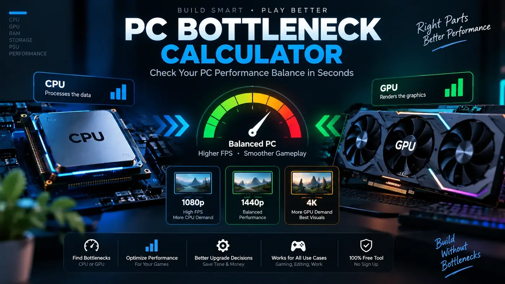

PC Bottleneck Guides & Practical Hardware Articles
Independent, educational guides about PC bottlenecks, CPU and GPU performance, RAM, temperatures, storage, PC usage and upgrade planning. Each guide is written to help you understand what your computer is doing before you spend money on hardware.

Resizable BAR Explained
Does it increase FPS, what you need, and how to enable it safely.
Read the guide →Lag vs Low FPS
Tell network lag from a PC bottleneck using FPS, ping and packet loss.
Read the guide →Single vs Dual Channel RAM
How much FPS one stick costs, how to check your channel mode and which slots to use.
Read the guide →Can a Monitor Bottleneck Your PC?
Refresh rate vs FPS, why 240Hz exposes CPU limits, and cable checks.
Read the guide →Does RAM Speed Affect FPS?
DDR4 vs DDR5, MHz and CL timings, and when faster memory really helps.
Read the guide →How to Undervolt Your GPU
Lower temperatures, reduce noise, and maintain gaming performance by optimizing your voltage curve.
Read the guide →How to Enable XMP or EXPO
Turn on your RAM profile, verify the speed and fix boot problems.
Read the guide →PCIe 3.0 vs 4.0 vs 5.0 for GPUs
Lane counts, x8 cards and when the slot version matters.
Read the guide →Windows Settings for Gaming
Safe settings that help, and popular tweaks you can skip.
Read the guide →V-Sync vs G-Sync vs FreeSync
Tearing, input lag and the FPS cap that keeps things smooth.
Read the guide →Ray Tracing and Bottlenecks
See whether ray tracing is costing you GPU, CPU or VRAM.
Read the guide →Gaming Laptop Bottlenecks
Power limits, hybrid graphics, single-channel RAM and heat.
Read the guide →Gaming and Streaming Together
Read OBS stats to fix encoding lag, rendering lag and dropped frames.
Read the guide →How Accurate Are Bottleneck Calculators?
What the estimate means, where it falls short and how to verify it.
Read the guide →Can a Motherboard Bottleneck Your PC?
Chipsets, VRMs, memory support and BIOS compatibility.
Read the guide →Types of PC Bottlenecks
CPU, GPU, RAM, storage, bandwidth, motherboard, power and cooling limits.
Read the guide →How to Avoid a PC Bottleneck
Plan a balanced PC build with compatible parts before you buy.
Read the guide →What Is a Good Bottleneck Percentage?
Is 10%, 20% or 30% bad? Learn how to read calculator results.
Read the guide →Thermal Throttling vs CPU Bottleneck
Tell heat problems from CPU limits and learn safe gaming temperatures.
Read the guide →Does a PSU Cause a Bottleneck?
What an undersized power supply really does and how much wattage you need.
Read the guide →SSD vs HDD vs NVMe for Gaming
Compare load times, stutter and FPS to see if storage is slowing your PC.
Read the guide →How Much VRAM Do You Need?
8GB, 12GB or 16GB? Match graphics memory to 1080p, 1440p and 4K.
Read the guide →What Causes PC Stuttering?
Learn how to fix PC stuttering by diagnosing 1% lows and frame pacing issues.
Read the guide →How to Fix Low GPU Usage While Gaming
Find out why your GPU sits at 40 to 60% and how to fix FPS caps, CPU limits and settings.
Read the guide →How to Fix 100% CPU Usage
Learn how to lower CPU usage and stop stuttering without buying a new processor.
Read the guide →Resolution Bottlenecks
Understand how 1080p, 1440p, and 4K change your CPU and GPU bottleneck.
Read the guide →Is 16GB RAM Enough?
Find out if 16GB of RAM is causing a bottleneck in modern games.
Read the guide →DLSS and Frame Gen
Learn how upscaling and Frame Gen impact your CPU and GPU bottleneck.
Read the guide →PC Upgrade Checklist
Use this complete hardware checklist to determine what part needs an upgrade.
Read the guide →How to Check a PC Bottleneck
CPU and GPU utilization, frame time, RAM, temperatures and controlled tests.
Read the guide →CPU vs GPU Bottleneck
Understand how to tell which component is limiting your PC.
Read the guide →How to Choose a Gaming CPU
Cores, cache, clock speed, platform cost and GPU pairing explained.
Read the guide →GPU Bottleneck Guide
GPU usage, VRAM, resolution, ray tracing and graphics settings.
Read the guide →RAM and PC Bottlenecks
Learn how RAM capacity and speed affect gaming performance.
Read the guide →How to Fix a PC Bottleneck and Boost FPS
Practical upgrade and optimization solutions to reduce bottlenecks.
Read the guide →How to use these guides
Start with the calculator when you want a quick system-level estimate. Use the guides when you want to understand the reasoning behind a result. For an important purchase, combine both with current manufacturer specifications and independent benchmark data for the exact games or applications you use.
Topics covered
Our PC performance content covers CPU bottlenecks, GPU bottlenecks, gaming CPU selection, RAM capacity, GPU utilization, frame time, thermals, storage, power headroom and Windows resource monitoring. The goal is practical troubleshooting rather than a single universal percentage.